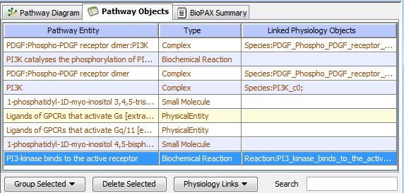
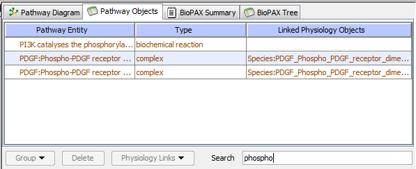

A table of pathway entities can be used to examine their properties and their linkage to Physiology. It is the table format representation of the Pathway Diagram View.

The table view shows the pathway entities, their type and linked objects within the physiology. For example, the selected reaction and its participants are already linked to reaction and species in physiology.
For every selected object in the top view the bottom pane of the window displays Object Properties, such as name, linked physiolofy objects, reaction participants for reaction, clickable links to original databases and publications, comments etc.
The user can perform various operations upon these entities, either on individually selected
entities or multiple selected entities using the
Entities Management Toolbar. Clicking on
Physiology Links button will either show linked physiology objects for selected
pathway entities, or allow editing them, or establish new links.

The table items can be sorted alphabetically by any column by clicking on the column header.
As an added capability, the items in the table can be filtered in real time by typing a string
inside the Search field.
